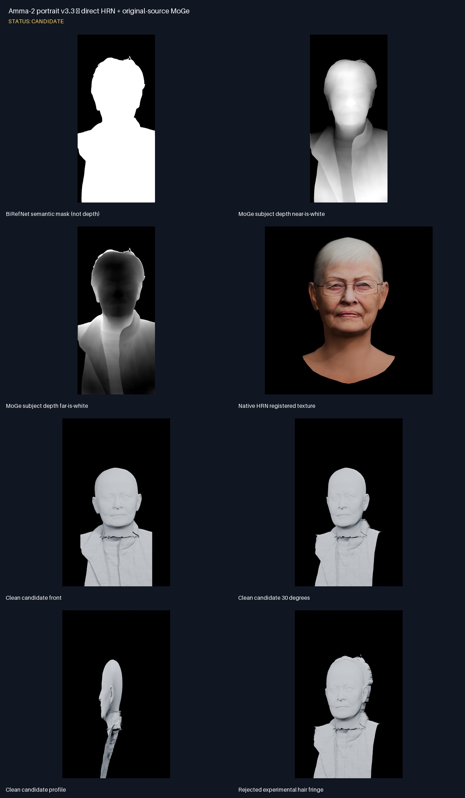
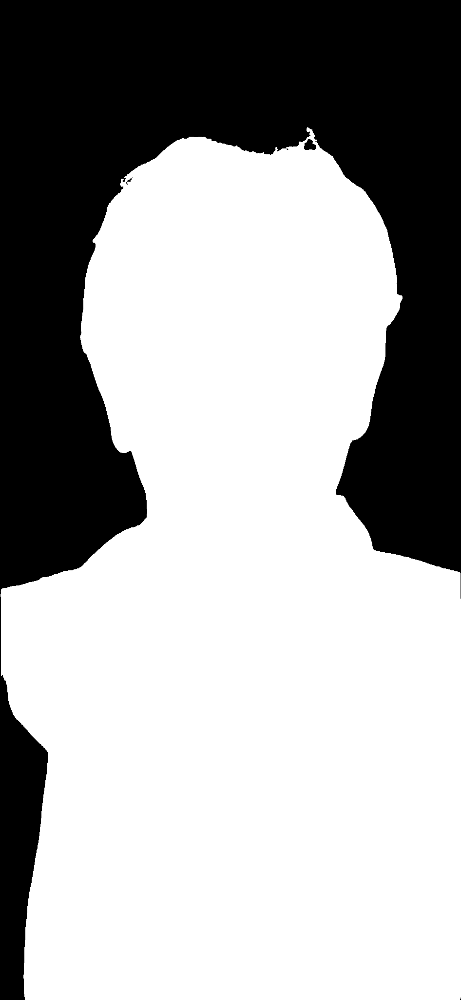
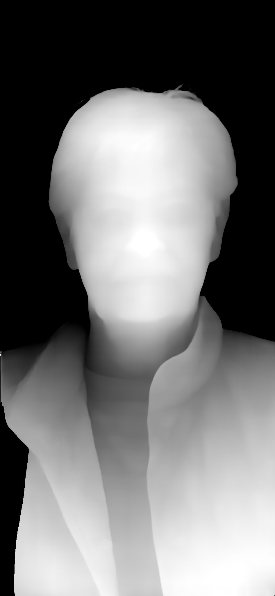
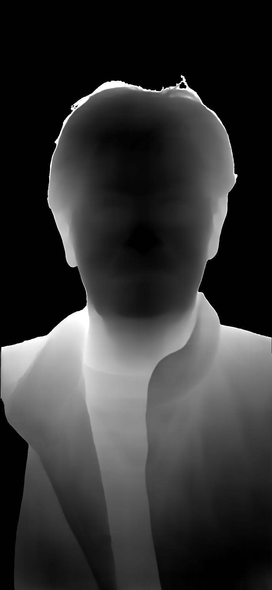
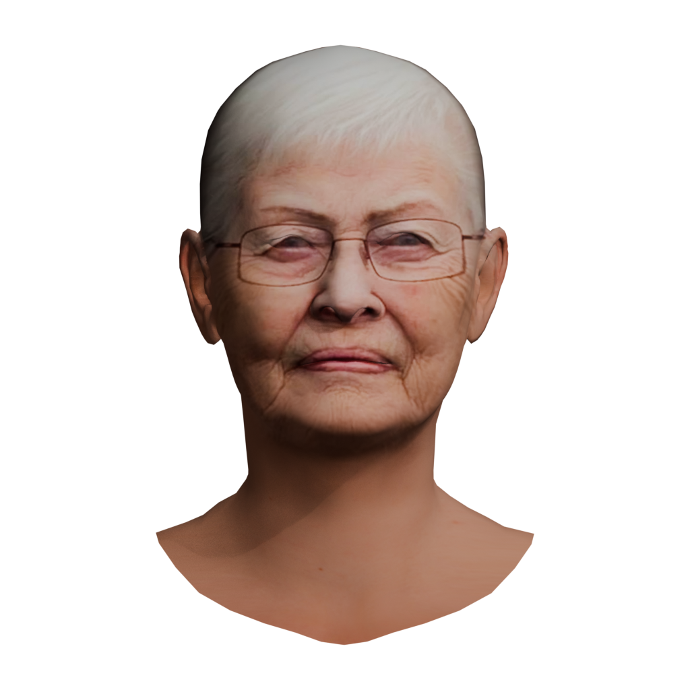
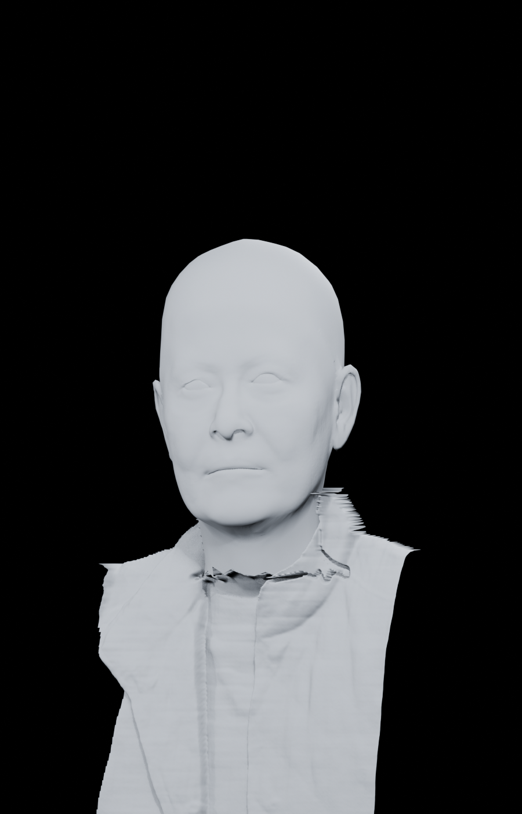
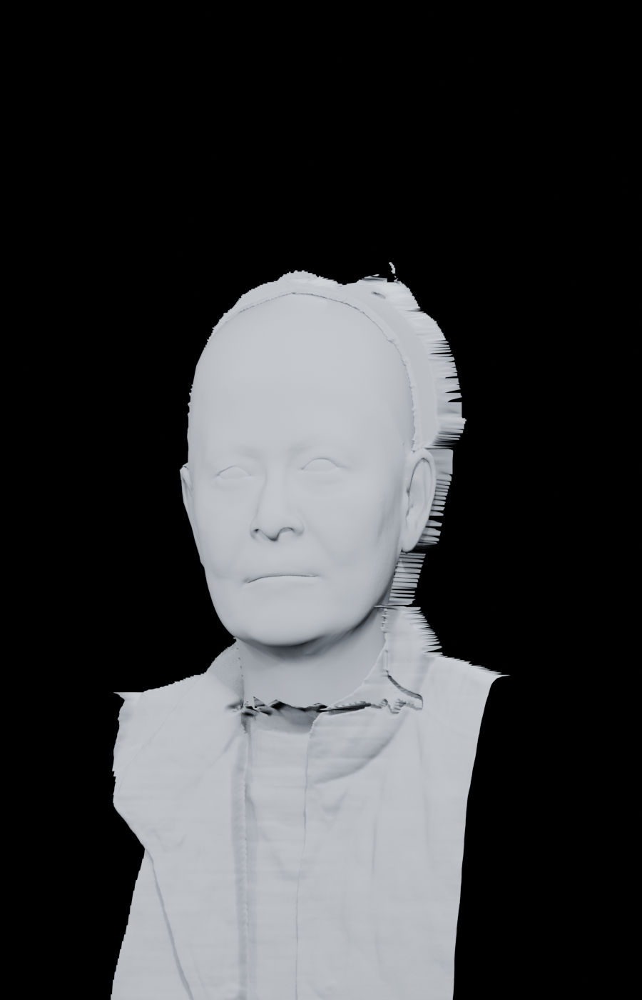

Amma-2 portrait v3.3 — direct HRN + original-source MoGe
Status: CANDIDATE
- Candidate, not accepted: the neck-to-garment seam still needs a dedicated stitch/remesh pass.
- BiRefNet produces the binary silhouette only; MoGe-2 ViT-L produces metric depth.
- MoGe was run on the original opaque 2K image and normalized only within the subject mask.
- HRN native topology owns the face and complete shallow head; PARE/ICON/ECON are not used for this close portrait.

Contact sheet
BiRefNet semantic mask (not depth)

MoGe subject depth near-is-white

MoGe subject depth far-is-white

Native HRN registered texture
 Clean candidate front
Clean candidate front

Clean candidate 30 degrees
 Clean candidate profile
Clean candidate profile

Rejected experimental hair fringe